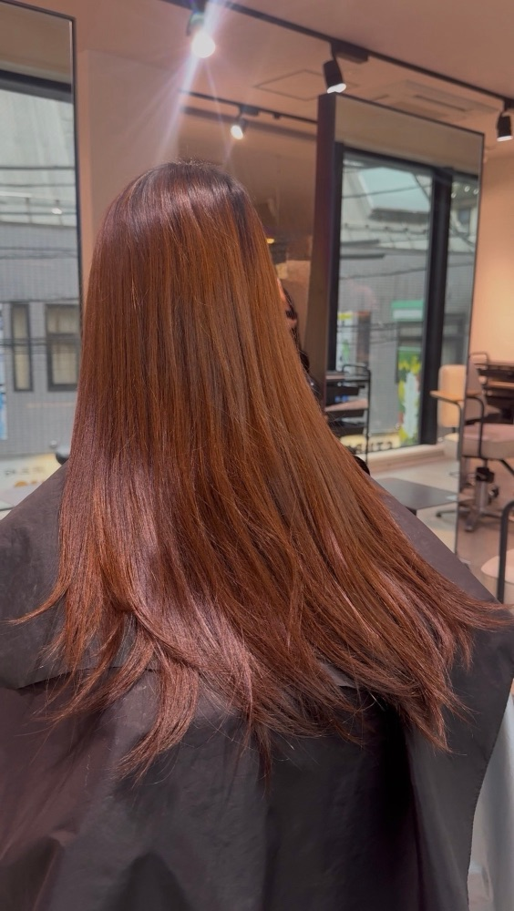
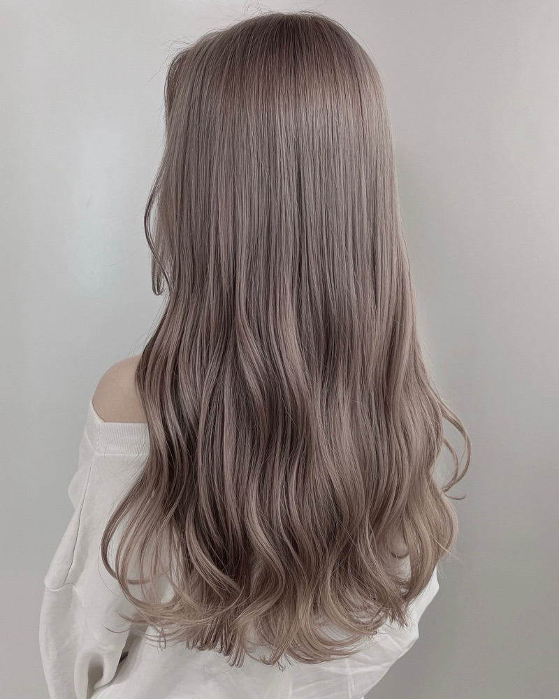
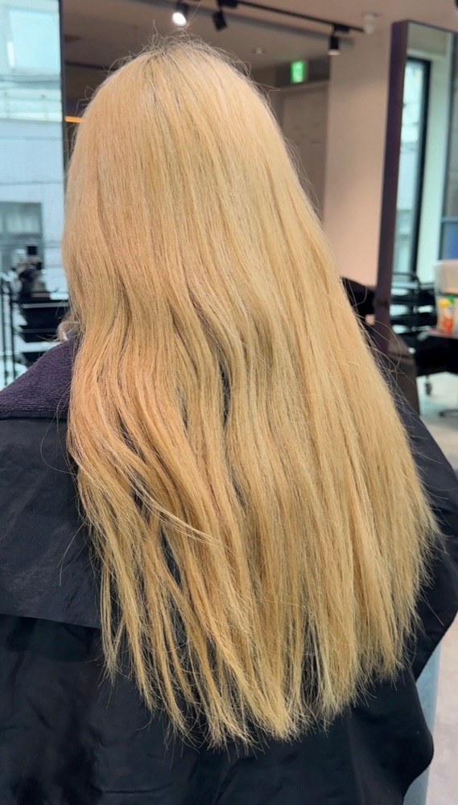
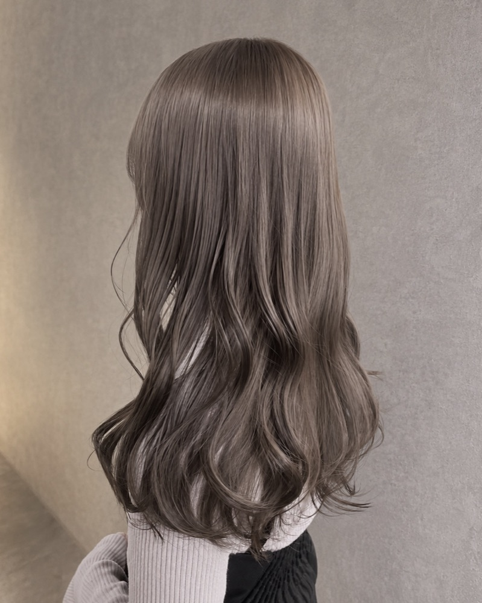
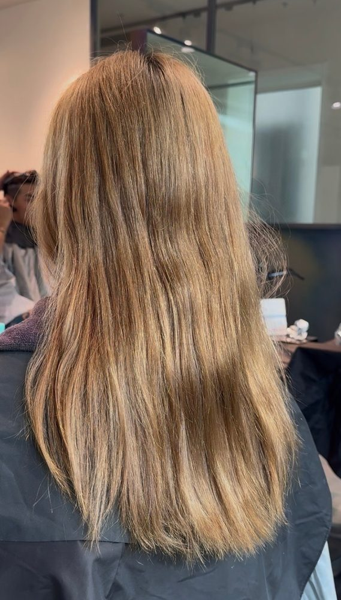
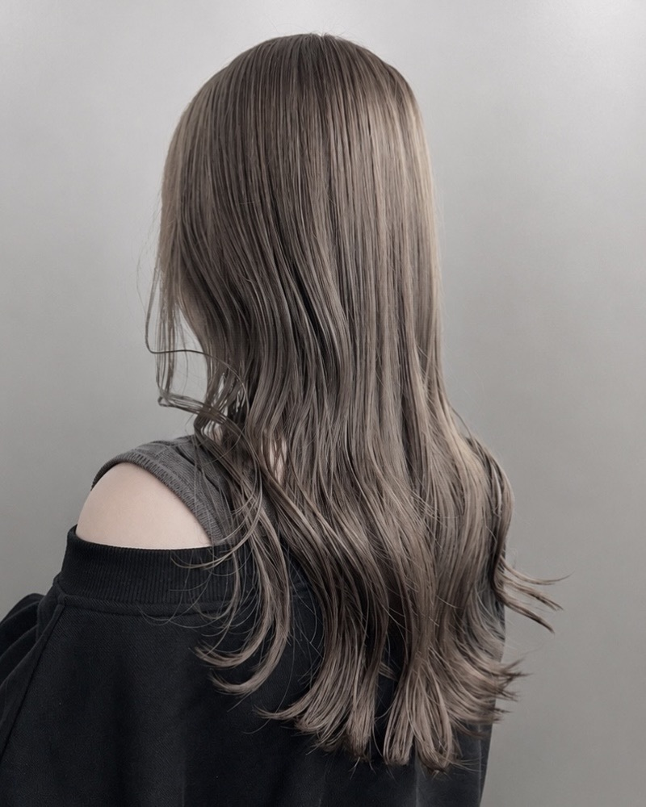
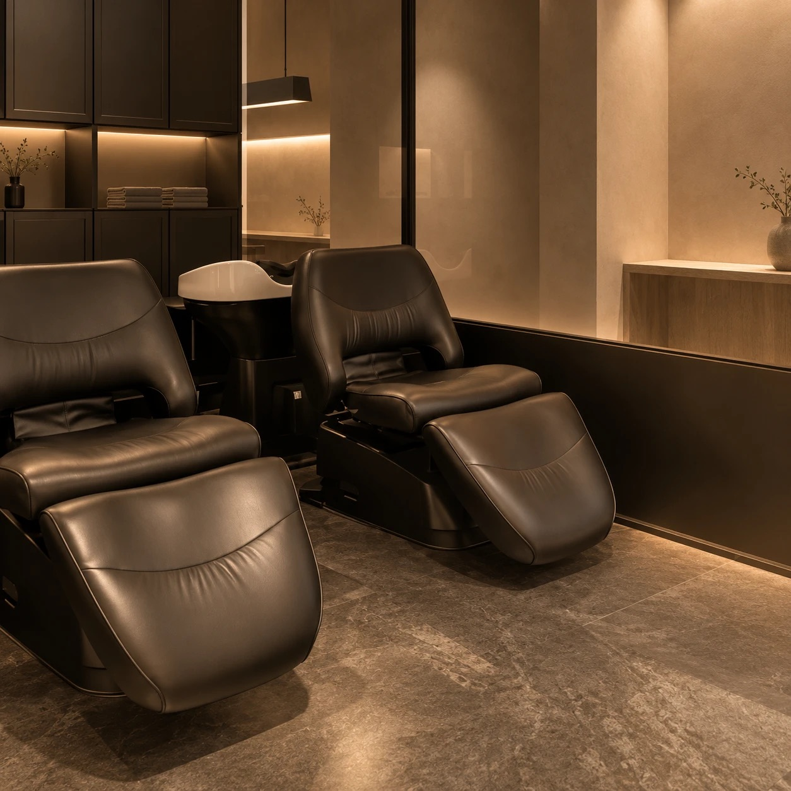

Worries
どれも、実際にご相談いただいたお悩みです。下の施術事例をご覧ください。
Works






ほかの事例は Instagram @takuya___hair で紹介しています。

Reason
どんな髪でもできるわけではありません。無理に施術するのではなく、事前に髪の状態を見て判断します。
同じ「縮毛矯正した髪」でも、この6つで状態はまったく違います。だから10種類の薬剤から選び、置く時間も塗り方も、一人ひとり変えます。
年間700件の施術のうち、お断りしたのは2件。どちらも「縮毛矯正＋黒染め＋ブリーチ3〜4回」の履歴がある髪でした。できない髪には、できないとはっきりお伝えします。